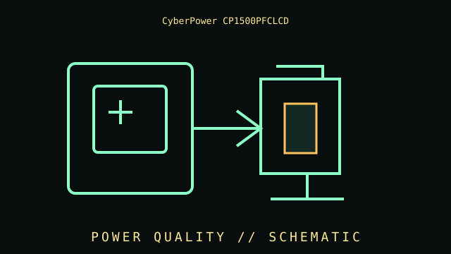

[ LINE-INTERACTIVE UPS // IDENTIFIED MODEL ]
CyberPower CP1500PFCLCD
Line-interactive pure-sine-wave UPS, 1500 VA / 1000 W, 120 V; 12 NEMA 5-15R outlets (six battery-backed + surge, six surge-only); AVR and LCD. This record covers the specific labeled model and regional configuration, not every item in the product family.

ARCHIVAL IDENTIFICATION: Preserve the complete SKU, suffix, region, date code, manual revision, battery part (if applicable) and observed condition. Similar names do not prove equivalent hardware.
Model specifications & service record
| Subcategory | Line-interactive UPS |
|---|---|
| Topology / function | Line-interactive UPS with AVR; pure sine-wave inverter output is designed for active PFC power supplies. |
| VA/W ratings and outlets | 1500 VA / 1000 W; 120 V; 12 NEMA 5-15R (six battery + surge and six surge-only). |
| Battery / replacement | User-replaceable sealed lead-acid battery assembly; use CyberPower’s specified pack and documented battery procedure. |
| Runtime and conditions | Use CyberPower’s CP1500PFCLCD runtime chart at the measured load. Runtime falls as watts rise and depends on battery age, temperature, charge and condition; chart figures are estimates, not a guarantee. |
| Interfaces / monitoring | Multifunction LCD, USB communication and serial interface for compatible shutdown/monitoring software; RJ45 data-line protection. Verify the exact model manual for included cable/port behavior. |
| Safety and limitations | 120 V North American model; 1000 W maximum. Only six outlets are battery-backed. Do not connect high-inrush loads beyond the documented limits; follow battery handling/disposal directions. |
| Revision / exact identification | Do not confuse CP1500PFCLCD with CP1500AVRLCD or later numbered revisions; waveform, ratings and outlet groups are model-specific. |
Archival and service notes
- Record the nameplate and battery label before service; keep measured behavior separate from manufacturer ratings and note load, input, temperature and test date.
- Do not open energized mains equipment. Batteries can deliver high fault current and may contain hazardous materials; follow manufacturer handling, replacement and recycling instructions.
- For preserved units, record physical damage, alarms, missing parts, battery age/swelling/leakage and substituted components. Do not energize damaged equipment.
Manufacturer sources
- Manufacturer product specifications — CyberPower CP1500PFCLCDPrimary source for the named SKU’s regional specifications and available product documentation.
- Manufacturer manual / support referenceConsult the revision matching the complete label code. Runtime estimates are manufacturer estimates at stated loads and operating conditions, not a guaranteed duration for aged batteries.